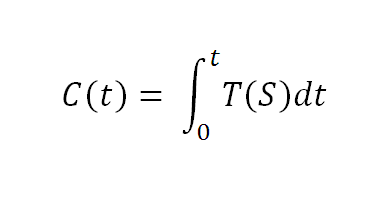

La cultura es la tecnología
La cultura (C), en un instante dado t, es la integral de la tecnología (T) aplicada a la sociedad (S):

Con todo respeto, pero esta ecuación, es la que no entiende Kevin Kelly.
Gracias a @cadaunante tenemos la traducción de lo que dice Kelly:
“La tecnología se ha convertido en nuestra cultura… …nuestra tecnología cultural.
La tecnología ya no está más fuera, no es más un extraño, ya no está en la periferia. Está en el centro de nuestra vidas. “La tecnología es la fogata alrededor de la cual nos reunimos”, dice la artista Laurie Anderson. Durante muchas décadas, la presencia de alta tecnología fue marginal. De repente, en un abrir y cerrar de ojos, está en todas partes y es de importancia fundamental.”
Yo afirmo que no es así. No es que la tecnología se haya convertido en nuestra cultura, al contrario, siempre la cultura ha sido un resultado de aplicar la tecnología sobre la sociedad (entendida como grupo humano con cierto grado de organización).
¿No es acaso una fogata, alta tecnología del paleolítico?
Ejemplos hay miles, mi favorito: el lenguaje, que no es más que una de las primeras tecnología de la información.
Piensen en la pildora anti conceptiva, ¿no es una tecnología que cambió radicalmenta a la cultura de fines del siglo XX?
Somos seres tecnológicos, nuestra cultura no es más que la suma de todos los cambios tecnológicos continuos, aplicados por nosotros a nosotros mismos, ¡por eso que es una integral en el tiempo!
El resto de lo que dice Kelly me parece más interesante:
“Pero si el éxito sigue un modelo biológico, así lo hace también el fracaso. Una historia para estar prevenidos: un día, en la playa, pequeñas algas rojas de repente crecen hasta convertirse en una vasta ola roja. Unas semanas más tarde, justo cuando la mancha roja parece indeleble, se disuelve. Los lemmings aumentan rápidamente y luego desaparecen. Las mismas fuerzas biológicas que multiplican las poblaciones, las reducen. Las mismas fuerzas que se alimentan entre sí para amplificar presencias en la red y crear poderosos estándares de la noche a la mañana, pueden operar en sentido inverso para desarmarlos en un pestañeo. Las mismas fuerzas que convergen para construir organizaciones de una manera tan biológica, pueden también converger para derribarlas. Uno puede esperar que cuando la fortuna de Microsoft cambie, sus ganancias colapsen en una curva inversamente simétrica a su éxito. Todas las razones autoconvincentes para unirse al éxito de una red, operan marcha atrás cuando el éxito se convierte en fracaso y todo el mundo quiere volar.
Es cierto, en biología hay fenómenos raros, que no podemos explicar, como los de los lemmings (los que por cierto no se suicidan en masa como dice el mito).
Pero la verdad es que aún no sabemos mucho de cuales son las fuerzas que generan estos fenómenos biológicos.
Lo interesante, de lo que dice Kelly, es que plantea que el efecto red es reversible, que actúa en forma simétrica, pero en sentido opuesto. [Microsoft se ha beneficiado mucho del efecto red]/2008/01/bob-metcalfe-es-uno-de.html), y si Kelly tiene razón, el gigante puede caer de una forma estrepitosa, por culpa del mismo efecto.
Toda la biología está basada en la idea central de la evolución de Darwin.
En la evolución no hay éxito, ni fracasos. La evolución no es progreso, es adaptación, si los organismos se adaptan a los cambios, entonces sobreviven, evolucionan, son distintos, no son ni mejores ni peores, son aptos a las nuevas condiciones.
Pensemos en IBM, hace 25 años era como Microsoft, las fuerzas que lo habían llevado a ser la empresa más importante en informática actuaron para desplazarlo de su nicho, el chico nuevo del barrio, ese nuevo especimen, Microsoft, que aprovechó las condiciones ambientales, terminó desplazando a IBM de todo un nicho. Pero IBM reaccionó, se adaptó, al punto que encontró la forma de atacar a su antiguo enemigo, es uno de los principales financistas del open source. Microsoft se ha adaptado anteriormente, la pregunta es si logrará hacerlo a tiempo.
Hay mucha gente que cree que el opensource, el free software, o la cultura libre son el camino correcto, lo adecuado, incluso el camino ético, que son progreso, en definitiva.
Yo no creo eso, la cultura libre, es efecto red, en sentido inverso al que llevó a empresas como Microsoft al éxito, a convertirse en la especie dominante, en el rey del nicho ecológico.
No es el camino correcto, tampoco es el camino incorrecto, es sólo un salto evolutivo, un nuevo estadio, una adaptación a una nueva realidad, la que por supuesto generará cambios culturales inevitables.
La tecnología ha sido la gran impulsora de la idea de “cultura libre”, y ¿no es eso una prueba más de la validez de mi ecuación?
:wink: